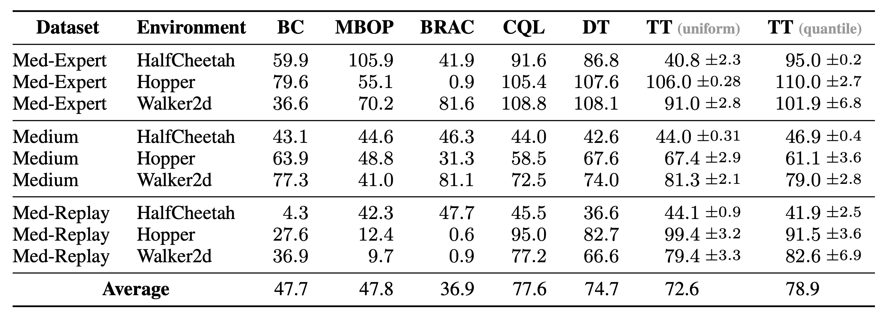
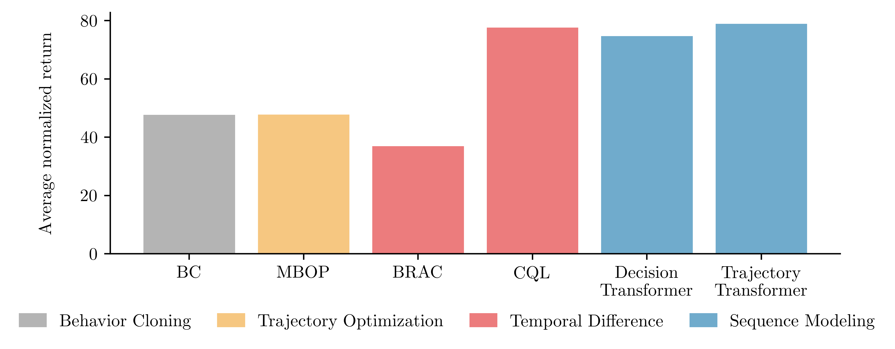

Trajectory Transformer Offline RL Results
Locomotion tasks

Performance on the locomotion environments in the D4RL offline locomotion benchmark. We compare two variants of the Trajectory Transformer (TT) — differing in how they discretize continuous inputs — with model-based, value-based, and recently proposed sequence-modeling algorithms.
Compositionality in AntMaze

AntMaze tasks evaluate temporal compositionality because they require stitching together multiple zero-reward trajectories in the dataset to reach a designated goal.
\(Q\)-guided Trajectory Transformer planning (TT\(_{\color{#999999}{(+Q)}}\)) outperforms all prior methods on all maze sizes and dataset compositions.
In particular, it outperforms the IQL method from which we obtain the \(Q\)-function, underscoring that planning with a \(Q\)-function as a search heuristic can be less susceptible to errors in the \(Q\)-function than policy extraction.
However, because the \(Q\)-guided planning procedure still benefits from the temporal compositionality of both dynamic programming and planning, it outperforms return-conditioning approaches that suffer due to the lack of complete demonstrations.
Abbreviations: Trajectory Transformer (TT), Decision Transformer (DT), conservative \(Q\)-learning (CQL), implicit \(Q\)-learning (IQL), model-based offline planning (MBOP), behavior-regularized actor critic (BRAC), behavior cloning (BC)